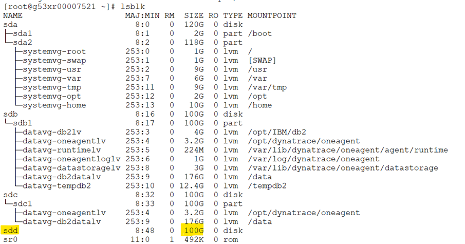

CPC Disk Addition
Step: 1
Step: 2

Step: 3

Step: 4

Step: 5

Step: 6

Step: 7

Below commands can be used for multipath LV expansion¶
# pvcreate /dev/mapper/mpathb
# vgextend datavg /dev/mapper/mpathb
# vgs
# df -hTP /tempdb2
# lvextend -L +2G /dev/mapper/datavg-tempdb2lv -r
# df -hTP /tempdb2
Below commands can be used for LV expansion¶
[root@g53xr00006301 ~]# vgs
VG #PV #LV #SN Attr VSize VFree
datavg 2 9 0 wz--n- 199.99g 90.84g
systemvg 1 7 0 wz--n- <118.00g <78.73g
[root@g53xr00006301 ~]# lvextend -L +20G /dev/mapper/datavg-datalv -r